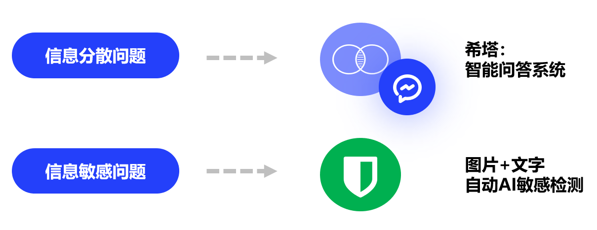

智能校园信息平台HITA
团队介绍
组长：陈冠中
创始人：陈冠中、李程浩、金智昊
背景
首先，作为哈尔滨工业大学（深圳）的学生，首先感受到的是学生端智能校园的缺席。许多的辅助信息平台无法与学生的需求进行对接，学生的体验有很大的提升空间。
从所有校园信息平台的共性出发，大多正在投入使用的平台都呈现出以下问题：
- 交互逻辑主次不分明、功能眼花缭乱
- 静态功能，只能实现基本的功能，智能化程度弱
- 以功能整合为中心，而非以用户需求与体验为中心
而哈尔滨工业大学（深圳）的校园信息平台仅仅以“教务系统”的方式出现在学生面前，学生的体验面临更大的挑战：
- 仅电脑端可以良好适配，没有开辟移动端，易用性严重不足
- 作为信息平台，教务系统信息不全、功能不足
项目目标
项目终极目标是“真正投入使用”，因此我们需要关心用户的需求。在经过调研和实际运行过程中，我们最终确定以下目标：
- 用户体验：突破传统的UI，改用简介的Material Design 模式
- 信息平台功能：教务系统主功能支持、校园信息的整合
- 信息智能化：语音助手，敏感信息检测，语义分析等
这三个部分是HITA项目的核心，要想实现智能化，就必须有相应的数据信息，同时也必须在用户交互上做到易用性，这样才能提供给用户良好的体验。
如何将HITA推向智能是我们考虑的一个重要问题，接下来我们介绍我们在其中的实现。
项目实现
在HITA项目设计的过程中，我们就已经将其投入使用。项目成果APP“HITSZ助手”已上线各大安卓应用商店，截至2021年1月共有4100位注册用户和2500日活跃量，覆盖了大部分哈工大深圳本科生。
HITA工作室
HITA工作室孕育出了“HITSZ助手”应用软件，其功能包括课程表、θ社区、掌上教务、新闻中心等。其中，为解决信息分散问题，项目引入智能问答系统和黄页。
问答系统利用端侧算力完成分词和词性标注任务，利用云端能力完成语义槽填充、知识库检索任务，从而支持了包括固定式校园信息问答、开放式课表与日程问答等多种问答模式。具体的功能和实现：
- 基于规则的基本槽填充查询：刘洋老师办公室在哪？
- 基于RNN的可扩展槽填充：H308教室今晚八点是否处于借用状态？
- 小黄鸡语料库＋LSTM模型实现闲聊：嗨，今天心情怎么样？
θ社区则引入了引入了智能敏感屏蔽手段。利用端侧算力完成文字的敏感词检测和图片的初步敏感标注任务，利用云端能力完成文字情感分析和图片的敏感判定任务。通过端云结合的敏感检测，θ社区能够有效地消除校园论坛的敏感信息风险。具体的功能和实现：
- 文字敏感匹配：手机端基于静态词库，初步标记。服务端基于动态词库，辅以消除歧义机制来判定敏感。
- 基于NSFW模型的图片敏感屏蔽：手机端基于NSFW-tflite初步标记敏感图库，服务端基于NSFWJS判定敏感，前后者分别实现80%、90%准确率，最终准确率为96%以上。
面向推广的实现
为了能够让大家更便利的享受服务，HITSZ助手从刚需出发，完全抛弃主流掌上校园信息平台臃肿的交互方式，构建层次感、主次感的交互逻辑，以简洁美观的UI和最清晰的交互，拒绝臃肿，为学生提供更便捷的服务。
项目前景
当前，该项目已经成功获得了哈尔滨工业大学（深圳）的相当大的用户份额，这表明从实践是上来看，该项目已经取得了基本的成功。而HITA接下来的方向总结如下：
- 智能化：更智能的问答系统，将被运用到招生咨询等场景。在新生入学后也能提供更人性化的指引。
- 信息化：扩展信息平台蕴含的信息量，提供更多样的功能支持。数据量的增长也为针对学生的个性化推荐提供空间。
- 一体化：将信息平台与教务深度融合，让信息不仅从教务来，还可以回到教务去，同时，也要从用户获取信息，加强学校和用户之间的沟通便利性。
总结
HITA的突出成果是设计并实现了智能化信息平台，上架各大应用商店并成功投入使用，取得了目标群体的大部分市场份额。其作为信息平台，仍然产生出其广阔的前景，也是人工智能应用的绝佳土壤。